배우기 전에 먼저 해 보세요. 틀려도 괜찮아요.
'발코니가 있어요?'는 어떻게 물을까요?
어떤 곳에 무엇이 '있다'는 es gibt로 말해요.
집 광고에 3 Zi.라고 적혀 있어요. 무슨 뜻일까요?
Zi.는 Zimmer를 줄인 말이에요.
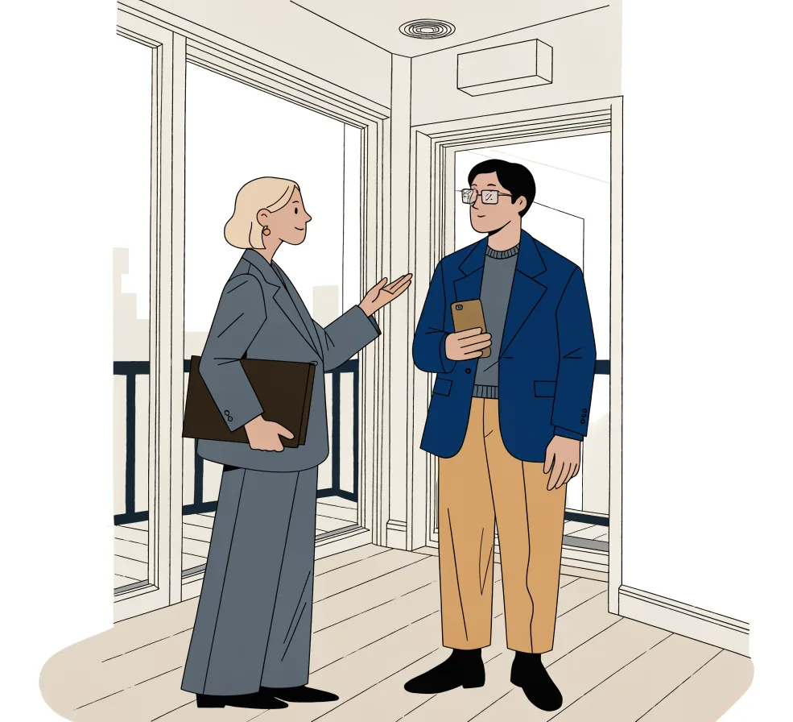
독일에서 집을 구하려면 광고를 읽고, 집을 보러 가서, 궁금한 것을 물어야 해요. Jiu의 WG에는 빈방이 하나 생겼고, Dohyun은 가족과 살 집을 보러 가고, Sora는 거실 사진을 보여 주며 집을 소개해요.
문법 es gibt, Adjektive (groß, hell, teuer), Wechselpräpositionen mit Dativ (Wo?)
과제대학WG 방 광고를 읽고 방 보러 갈 약속 잡기
과제직장집주인에게 집에 대해 묻고 계약 조건 확인하기
이 과를 마치면 집 광고를 이해하고, 방과 가구를 설명하고, 집을 보면서 궁금한 것을 물을 수 있어요.
이 과에서 쓸 말이에요. 눌러서 먼저 들어 보세요.
배우기 전에 먼저 해 보세요. 틀려도 괜찮아요.
'발코니가 있어요?'는 어떻게 물을까요?
어떤 곳에 무엇이 '있다'는 es gibt로 말해요.
집 광고에 3 Zi.라고 적혀 있어요. 무슨 뜻일까요?
Zi.는 Zimmer를 줄인 말이에요.
Lektion 1의 낱말 다섯 개를 다시 떠올려 보세요.
저녁, WG 부엌이에요. 같이 살던 Tim이 이사를 가요. Jiu와 Lena가 빈방 광고를 준비해요.
들으면서 찾아보세요. 빈방의 집세는 얼마인가요?
토요일 오전이에요. Dohyun이 가족과 살 집을 보러 왔어요. 집주인 Frau Krause가 집을 보여 줘요.
들으면서 찾아보세요. 이 집에 없는 것은 무엇인가요?
수업이 끝난 뒤예요. Sora가 Frau Becker에게 거실 사진을 보여 줘요.
들으면서 찾아보세요. 탁자는 어디에 있나요?
세 대화를 듣고 답하세요.
Tim의 방은 얼마나 큰가요?
Im Zimmer gibt es einen Stuhl.
침대, 옷장, 책상은 있지만 의자는 없어요.
WG 방의 집세는 얼마인가요?
Dohyun이 본 집에 없는 것은 무엇인가요?
Die Wohnung hat drei Zimmer.
그 집의 관리비는 얼마인가요?
Sora의 거실에서 탁자는 어디에 있나요?
Das Bild hängt über dem Sofa.
낱말 45개예요. 낱말이나 예문 앞의 단추를 누르면 소리가 나요. 명사는 der, die, das를 색으로 구분했어요.
die Wohnung, die Wohnungen 집 (건물 안의 한 세대)
Die Wohnung hat drei Zimmer.그 집은 방이 세 개예요.
das Haus, die Häuser 집, 건물
Das Haus ist alt, aber schön.그 집은 오래됐지만 예뻐요.
das Zimmer, die Zimmer 방
Das Zimmer ist 16 Quadratmeter groß.그 방은 16제곱미터예요.
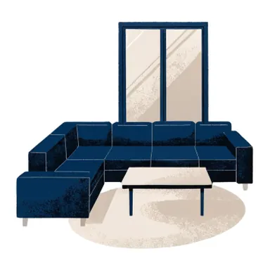
das Wohnzimmer, die Wohnzimmer 거실
Das Wohnzimmer ist groß und hell.거실이 크고 밝아요.
das Schlafzimmer, die Schlafzimmer 침실
Das Schlafzimmer ist rechts.침실은 오른쪽이에요.
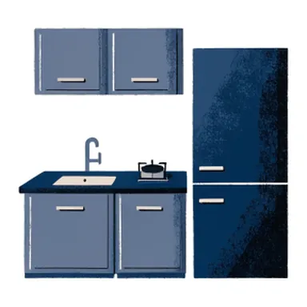
die Küche, die Küchen 부엌
Die Küche ist neu.부엌이 새것이에요.
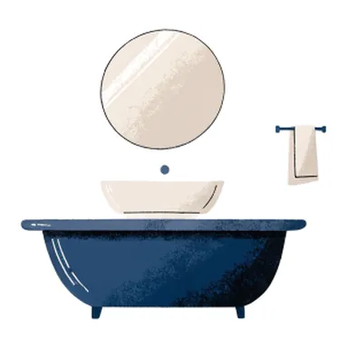
das Bad, die Bäder 욕실
Das Bad ist klein.욕실이 작아요.
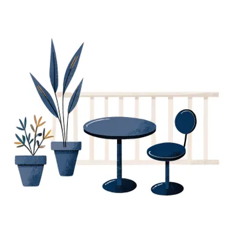
der Balkon, die Balkone 발코니
Gibt es einen Balkon?발코니가 있어요?
der Keller, die Keller 지하실, 지하 창고
Leider gibt es keinen Keller.아쉽게도 지하 창고는 없어요.
der Flur, die Flure 복도, 현관
Der Schrank steht im Flur.옷장은 복도에 있어요.
die Miete, die Mieten 집세
Wie hoch ist die Miete?집세가 얼마예요?
die Nebenkosten (Pl.) 관리비
Die Nebenkosten sind 250 Euro.관리비는 250유로예요.
die Kaution, die Kautionen 보증금
Wie hoch ist die Kaution?보증금은 얼마예요?
der Vermieter, die Vermieter 집주인 (남자)
Der Vermieter wohnt auch im Haus.집주인도 그 건물에 살아요.
die Vermieterin, die Vermieterinnen 집주인 (여자)
Die Vermieterin heißt Frau Krause.집주인은 Frau Krause예요.
die Anzeige, die Anzeigen 광고
Wir schreiben eine Anzeige.우리는 광고를 써요.
der Quadratmeter, die Quadratmeter 제곱미터
Die Wohnung hat 78 Quadratmeter.그 집은 78제곱미터예요.
die Möbel (Pl.) 가구
Gibt es Möbel im Zimmer?방에 가구가 있어요?
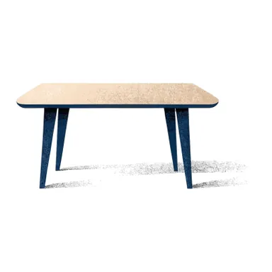
der Tisch, die Tische 탁자, 식탁
Vor dem Sofa steht ein Tisch.소파 앞에 탁자가 있어요.
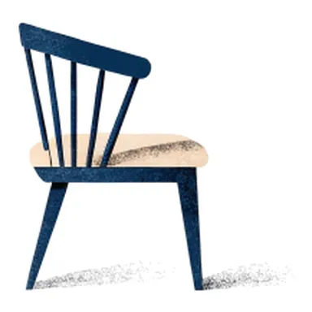
der Stuhl, die Stühle 의자
Am Tisch stehen vier Stühle.식탁에 의자가 네 개 있어요.
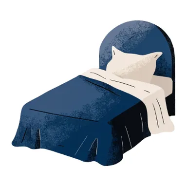
das Bett, die Betten 침대
Das Bett steht an der Wand.침대는 벽 쪽에 있어요.
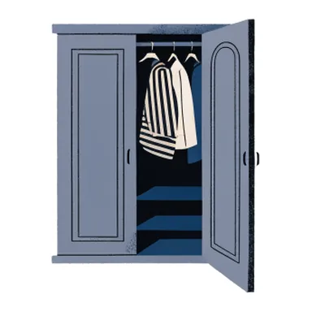
der Schrank, die Schränke 옷장, 장
Der Schrank steht neben der Tür.옷장은 문 옆에 있어요.
der Schreibtisch, die Schreibtische 책상
Der Schreibtisch steht am Fenster.책상은 창가에 있어요.
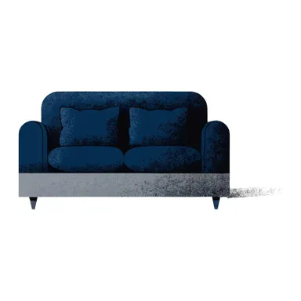
das Sofa, die Sofas 소파
Das Sofa ist neu.소파가 새것이에요.
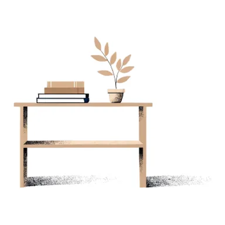
das Regal, die Regale 선반, 책장
Das Regal steht neben dem Sofa.책장은 소파 옆에 있어요.
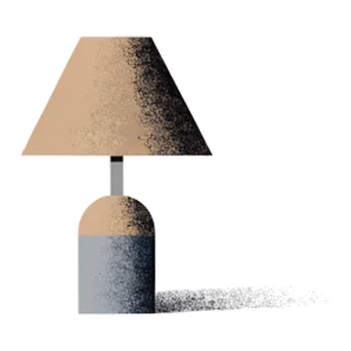
die Lampe, die Lampen 조명, 등
Die Lampe hängt über dem Tisch.등이 탁자 위쪽에 걸려 있어요.
der Fernseher, die Fernseher 텔레비전
Der Fernseher steht im Wohnzimmer.텔레비전은 거실에 있어요.
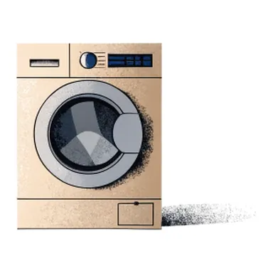
die Waschmaschine, die Waschmaschinen 세탁기
Die Waschmaschine steht im Bad.세탁기는 욕실에 있어요.
das Fenster, die Fenster 창문
Das Zimmer hat zwei Fenster.그 방은 창문이 두 개예요.
die Tür, die Türen 문
Die Tür ist rechts.문은 오른쪽에 있어요.
die Wand, die Wände 벽
An der Wand hängt ein Bild.벽에 그림이 걸려 있어요.
das Bild, die Bilder 그림, 사진
Das Bild ist von Hana.그 그림은 Hana가 그렸어요.
groß 큰
Das Wohnzimmer ist groß.거실이 커요.
klein 작은
Mein Zimmer ist klein.제 방은 작아요.
hell 밝은
Die Küche ist hell.부엌이 밝아요.
dunkel 어두운
Der Flur ist dunkel.복도가 어두워요.
ruhig 조용한
Die Straße ist ruhig.그 길은 조용해요.
laut 시끄러운
Die Wohnung ist leider laut.그 집은 아쉽게도 시끄러워요.
neu 새, 새로운
Das Bad ist neu.욕실이 새것이에요.
es gibt ~이 있다
Es gibt einen Balkon.발코니가 있어요.
stehen (서) 있다
Das Sofa steht am Fenster.소파는 창가에 있어요.
liegen (놓여) 있다
Das Foto liegt auf dem Tisch.사진은 탁자 위에 놓여 있어요.
hängen 걸려 있다
Das Bild hängt an der Wand.그림은 벽에 걸려 있어요.
mieten (집을) 빌리다, 세 들다
Ich möchte die Wohnung mieten.저는 그 집을 빌리고 싶어요.
ausziehen 이사 나가다
Tim zieht nächste Woche aus.Tim은 다음 주에 이사 나가요.
이 과의 낱말로 여덟 문제를 풀어요.
줄을 누르면 소리가 나요. 물건이 어디에 있는지 말할 때 쓰는 말이에요. 뒤에 오는 관사는 dem이나 der가 돼요.
줄을 누르면 소리가 나요. 집 광고는 자리를 아끼려고 줄임말을 많이 써요. 읽을 때는 줄이지 않은 말로 읽어요.
규칙
es gibt는 어떤 곳에 무엇이 '있다'고 말할 때 써요. 뒤에는 언제나 Akkusativ(4격)를 써요. 여러 개가 있어도 gibt의 모양은 바뀌지 않아요. 없다고 말할 때는 kein을 써요.
| 있다 | 없다 | |
|---|---|---|
| 남성 | Es gibt einen Balkon. | Es gibt keinen Balkon. |
| 중성 | Es gibt ein Bad. | Es gibt kein Bad. |
| 여성 | Es gibt eine Küche. | Es gibt keine Küche. |
| 복수 | Es gibt zwei Zimmer. | Es gibt keine Möbel. |
주의 한국어 '있다'는 독일어에서 세 가지로 나뉘어요. 내가 가진 것은 haben으로 말해요. Ich habe ein Auto. 어떤 곳에 무엇이 있는지는 es gibt로 말해요. Es gibt einen Balkon. 이미 아는 것이 어디에 있는지는 sein으로 말해요. Der Balkon ist hier.
규칙을 보고 바로 확인해 보세요.
es gibt 뒤에 오는 남성 명사 앞에는 무엇을 쓰나요?
규칙
형용사가 sein 뒤에 오면 끝이 바뀌지 않아요. 명사의 성이나 수와 상관없이 언제나 같은 모양이에요. 앞에 sehr(아주), zu(너무), nicht so(그렇게 ~하지 않은)를 붙여 정도를 말해요.
| 형용사 | 반대말 | 예 |
|---|---|---|
| groß | klein | Das Bad ist klein. |
| hell | dunkel | Der Flur ist dunkel. |
| ruhig | laut | Die Straße ist laut. |
| teuer | günstig | Die Miete ist günstig. |
| neu | alt | Die Küche ist alt. |
주의 zu teuer는 '너무 비싸서 안 된다'는 뜻이고, sehr teuer는 그냥 '아주 비싸다'는 뜻이에요. 크기는 Wie groß ist das Zimmer?, 집세는 Wie hoch ist die Miete?로 물어요. 형용사가 명사 바로 앞에 오면 끝이 바뀌어요. 그것은 나중에 배워요.
규칙을 보고 바로 확인해 보세요.
Die Wohnung ist hell.에서 hell의 끝은 어떻게 되나요?
규칙
1과에서 배운 in, an, auf와 함께 über, unter, vor, hinter, neben, zwischen도 있는 곳(Wo?)을 말할 때 Dativ와 써요. der와 das는 dem, die는 der, 복수의 die는 den이 돼요. 서 있는 물건은 stehen, 놓여 있는 물건은 liegen, 걸려 있는 물건은 hängen으로 말해요.
| 전치사 | 뜻 | 예 |
|---|---|---|
| in, an, auf | 안에, 옆에, 위에 | im Regal, am Fenster, auf dem Tisch |
| über, unter | 위쪽에, 아래에 | über dem Sofa, unter dem Bett |
| vor, hinter | 앞에, 뒤에 | vor der Tür, hinter dem Schrank |
| neben, zwischen | 옆에, 사이에 | neben der Lampe, zwischen den Fenstern |
주의 auf는 닿아서 위에 있을 때, über는 떨어져서 위쪽에 있을 때 써요. Das Foto liegt auf dem Tisch. Die Lampe hängt über dem Tisch. 한국어는 둘 다 '위에'라서 헷갈리기 쉬워요. 침대, 옷장, 탁자처럼 다리나 바닥으로 서 있는 가구에는 stehen을 써요.
규칙을 보고 바로 확인해 보세요.
neben 뒤에서 die Tür는 어떻게 되나요?
듣고 알맞은 것을 고르세요.
집은 몇 제곱미터인가요?
Die Wohnung hat zwei Zimmer, eine Küche und ein Bad. Sie ist 55 Quadratmeter groß.
방의 집세는 얼마인가요?
Das Zimmer kostet 450 Euro warm.
방에 없는 것은 무엇인가요?
Es gibt ein Bett und einen Schrank, aber keinen Schreibtisch.
Dohyun은 이 집을 어떻게 생각하나요?
Die Wohnung ist schön, aber sie ist leider zu teuer.
Jiu가 자기 방을 소개해요. 듣고 알맞은 것을 고르세요.
Jius Zimmer
Jiu Mein Zimmer ist klein, aber hell. Das Bett steht rechts an der Wand.
Jiu Der Schreibtisch steht am Fenster. Auf dem Schreibtisch liegt mein Laptop.
Jiu Neben der Tür steht ein Schrank. Und über dem Bett hängen Fotos von meiner Familie.
Jiu의 방은 어떤가요?
책상은 어디에 있나요?
침대 위쪽에 무엇이 걸려 있나요?
집 광고 두 개를 읽고, 맞으면 richtig, 틀리면 falsch를 고르세요. Zi.는 Zimmer, qm는 Quadratmeter, KM은 Kaltmiete, NK는 Nebenkosten, EBK는 붙박이 부엌이에요.
Anzeige 1
3-Zi.-Wohnung in Bockenheim, 78 qm, 2. Stock, Balkon, EBK, kein Keller. KM 1.350 €, NK 250 €, Kaution 3 Monatsmieten. Ab sofort frei. Telefon: 069 90009-355
Anzeige 2
WG-Zimmer in Bockenheim, 16 qm, hell und ruhig. Möbel: Bett, Schrank, Schreibtisch. Küche und Bad neu. 520 € warm. U-Bahn in der Nähe. E-Mail: lena.schmidt@example.org
Die Wohnung in Anzeige 1 hat drei Zimmer.
In der Wohnung gibt es einen Keller.
kein Keller라고 적혀 있어요.
Die Wohnung kostet 1.600 Euro warm.
Kaltmiete 1,350유로에 Nebenkosten 250유로를 더하면 1,600유로예요.
Das WG-Zimmer ist 16 Quadratmeter groß.
Im WG-Zimmer gibt es keine Möbel.
침대, 옷장, 책상이 있어요.
es gibt 뒤에 알맞은 말을 고르세요.
Es gibt Balkon.
Gibt es Waschmaschine?
Im Zimmer gibt es Bett.
Leider gibt es Keller.
Im Zimmer gibt es Möbel.
Gibt es hier Supermarkt?
반대말을 쓰세요.
groß –
hell –
ruhig –
neu –
teuer –
알맞은 관사를 고르세요.
Das Sofa steht vor Fenster.
Der Schrank steht neben Tür.
Das Bild hängt über Sofa.
Der Laptop liegt auf Schreibtisch.
Das Foto liegt unter Bett.
Der Fernseher steht zwischen Regal und Tür.
stehen, liegen, hängen 가운데 알맞은 동사를 고르세요.
Das Bett am Fenster.
Das Bild an der Wand.
Das Foto auf dem Tisch.
Der Schrank im Flur.
Die Lampe über dem Tisch.
낱말을 순서대로 눌러 문장을 만드세요.
발코니가 있어요?
집세가 얼마예요?
침대는 창가에 있어요.
소파 앞에 탁자가 있어요.
그 집은 아쉽게도 너무 비싸요.
알맞은 관사를 고르세요.
Küche
Bad
Balkon
Bett
Schrank
Lampe
Zimmer
Tisch
줄임말과 뜻을 짝지으세요.
듣고 그대로 써 보세요.
Gibt es einen Balkon? 발코니가 있어요?
Das Zimmer ist hell und ruhig. 방이 밝고 조용해요.
Das Bild hängt über dem Sofa. 그림은 소파 위쪽에 걸려 있어요.
Die Wohnung hat drei Zimmer. 집에 방이 세 개 있어요.
Das Zimmer ist 16 Quadratmeter groß. 방은 16제곱미터예요.
Es ist hell und ruhig. 밝고 조용해요.
Gibt es einen Balkon? 발코니가 있어요?
Gibt es eine Waschmaschine? 세탁기가 있어요?
Gibt es Möbel im Zimmer? 방에 가구가 있어요?
Wie hoch ist die Miete? 집세가 얼마예요?
Ist das warm oder kalt? 관리비를 포함한 값이에요, 뺀 값이에요?
Wie hoch ist die Kaution? 보증금은 얼마예요?
Ist das Zimmer noch frei? 방이 아직 비어 있어요?
Kann ich das Zimmer sehen? 방을 볼 수 있을까요?
Wann kann ich kommen? 언제 가면 될까요?
Das Bett steht am Fenster. 침대는 창가에 있어요.
Das Bild hängt an der Wand. 그림은 벽에 걸려 있어요.
Das Foto liegt auf dem Tisch. 사진은 탁자 위에 놓여 있어요.
Wie finden Sie die Wohnung? 집이 어떠세요?
Die Wohnung ist sehr schön. 집이 아주 좋아요.
Ich möchte die Wohnung gern nehmen. 이 집으로 하고 싶어요.
Das ist leider zu teuer. 아쉽지만 너무 비싸요.
과제 고르기
역할 대화와 말하기, 쓰기 과제는 대학 생활과 직장 생활 두 가지예요. 하나를 고르면 다음 과에서도 그쪽 과제가 나와요. 언제든 바꿀 수 있어요.
대화 A에서 역할을 하나 고르세요. 상대의 말은 음성으로 나오고, 내 차례에는 직접 말해요.
대화 B에서 역할을 하나 고르세요. 상대의 말은 음성으로 나오고, 내 차례에는 직접 말해요.
지금 사는 방을 떠올리고 칸을 채우세요. 방이 어떤지는 groß, klein, hell, ruhig처럼 써요. 가구는 Das Bett, Der Schreibtisch처럼 관사와 함께, 자리는 am Fenster, neben der Tür처럼 써요. 완성된 문장을 소리 내어 읽어 보세요.
Mein Zimmer ist klein und hell.
Das Bett steht am Fenster.
Im Zimmer gibt es auch einen Schrank.
인터넷에서 이 광고를 봤어요.
WG-Zimmer in Bockenheim, 16 qm, hell und ruhig. Möbel: Bett, Schrank, Schreibtisch. 520 € warm. U-Bahn in der Nähe.
방을 보고 싶어요. 광고를 낸 Lena에게 전화해서 방이 아직 비어 있는지 묻고, 보러 갈 약속을 잡아요. 토요일 오후에 시간이 있어요. 학생끼리는 du를 써요.
광고를 보고 Lena에게 전화해요. 쪽지를 보고 답하세요. Lena의 말을 듣고 소리 내어 답한 뒤 예시 답과 비교해 보세요.
Hallo, hier ist Lena Schmidt. 여보세요, Lena Schmidt예요.
Hallo, hier ist Minji Choi. Ich suche ein Zimmer. Ist das WG-Zimmer noch frei?
Ja, das Zimmer ist noch frei. Möchtest du das Zimmer sehen? 네, 방이 아직 비어 있어요. 방을 보러 올래요?
Ja, gern! Kann ich am Samstag kommen?
Am Samstag passt es gut. Um wie viel Uhr? 토요일 좋아요. 몇 시에요?
Um drei Uhr am Nachmittag. Geht das?
Ja, das geht. Hast du noch Fragen? 네, 돼요. 더 궁금한 것 있어요?
Ja. Gibt es eine Waschmaschine? Und wie hoch ist die Kaution?
Ja, im Bad gibt es eine Waschmaschine. Die Kaution ist 1.000 Euro. 네, 욕실에 세탁기가 있어요. 보증금은 1,000유로예요.
Gut, danke! Wie ist die Adresse?
Beispielweg 7 in Bockenheim. Bis Samstag! Bockenheim의 Beispielweg 7번지예요. 토요일에 봐요!
Vielen Dank! Bis Samstag um drei. Tschüss!
Eine Nachricht an die WG
광고를 낸 WG에 메시지를 써 보세요. 나를 짧게 소개하고, 방이 아직 비어 있는지 묻고, 보러 갈 수 있는 때를 써요. 다섯 문장이면 충분해요.
Hallo, ich heiße Minji Choi. Ich komme aus Korea und lerne Deutsch in Frankfurt. Ich suche ein Zimmer. Ist das WG-Zimmer noch frei? Gibt es eine Waschmaschine? Ich kann am Samstag um drei Uhr kommen. Viele Grüße, Minji
다 쓴 뒤에 확인해 보세요.
가족과 살 집을 찾고 있어요. 이 광고를 보고 집을 보러 왔어요.
3-Zi.-Wohnung in Bockenheim, 78 qm, Balkon, EBK. KM 1.350 €, NK 250 €.
집주인 Frau Krause에게 광고에 없는 것을 물어요. 지하 창고가 있는지, 세탁기가 있는지, 보증금이 얼마인지, 언제부터 들어올 수 있는지 궁금해요.
집을 보면서 집주인 Frau Krause와 이야기해요. 쪽지를 보고 궁금한 것을 물어요. 집주인의 말을 듣고 소리 내어 답한 뒤 예시 답과 비교해 보세요.
Guten Tag! Das ist die Wohnung. Wie finden Sie das Wohnzimmer? 안녕하세요! 이 집이에요. 거실은 어떠세요?
Guten Tag, Frau Krause! Das Wohnzimmer ist groß und sehr hell. Gibt es auch einen Keller?
Nein, leider gibt es keinen Keller. Haben Sie noch Fragen? 아니요, 아쉽게도 지하 창고는 없어요. 더 궁금한 것 있으세요?
Ja. Gibt es eine Waschmaschine?
Nein, aber im Bad gibt es einen Platz für die Waschmaschine. 아니요, 그렇지만 욕실에 세탁기 놓을 자리가 있어요.
Gut. Und wie hoch ist die Kaution?
Die Kaution? Drei Monatsmieten, also 4.050 Euro. 보증금이요? 석 달 치 집세, 그러니까 4,050유로예요.
Danke. Und ab wann ist die Wohnung frei?
Die Wohnung ist ab sofort frei. Möchten Sie die Wohnung nehmen? 집은 지금 바로 들어오실 수 있어요. 이 집으로 하시겠어요?
Ja, die Wohnung ist sehr schön. Ich möchte die Wohnung gern nehmen.
Eine E-Mail an die Vermieterin
집을 보고 온 뒤 집주인에게 메일을 써 보세요. 집이 어땠는지 말하고, 그 집으로 하고 싶다고 쓰고, 궁금한 것을 하나 물어요. 다섯 문장이면 충분해요.
Guten Tag, Frau Krause, vielen Dank für den Termin am Samstag. Die Wohnung ist groß, hell und ruhig. Ich möchte die Wohnung gern nehmen. Gibt es im Haus einen Platz für Fahrräder? Ich kann am Montag um 17 Uhr kommen. Viele Grüße, Minji Choi
다 쓴 뒤에 확인해 보세요.
Ich kann Wohnungsanzeigen verstehen.집 광고를 이해할 수 있어요.
Ich kann eine Wohnung und ein Zimmer beschreiben.집과 방을 설명할 수 있어요.
Ich kann sagen, wo die Möbel stehen.가구가 어디에 있는지 말할 수 있어요.
Ich kann bei einer Wohnungsbesichtigung Fragen stellen.집을 보면서 궁금한 것을 물을 수 있어요.